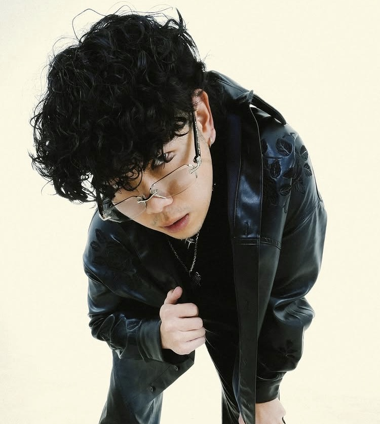

DXRIW เป็นศิลปินไทยจากกลุ่ม DIEOUT ที่มีบทบาทโดดเด่นในวงการเพลงอินดี้–ฮิปฮอปรุ่นใหม่ของไทย เขาเป็นสายร้องเป็นหลักด้วยเสียงที่มีเสน่ห์และโดดเด่น สามารถถ่ายทอดอารมณ์และความรู้สึกผ่านเพลงได้อย่างชัดเจน DXRIW มีส่วนร่วมทั้งในเพลงของกลุ่ม DIEOUT และงานฟีเจอริ่งกับเพื่อนศิลปิน ซึ่งช่วยทำให้ชื่อของเขาเริ่มเป็นที่รู้จักในวงการเพลงใต้ดินและกลุ่มผู้ฟังที่ชื่นชอบเสียงร้องที่มีเอกลักษณ์ ด้วยสไตล์เสียงที่อบอุ่นและมีเสน่ห์เฉพาะตัว DXRIW จึงกลายเป็นหนึ่งในสมาชิกที่โดดเด่นของ DIEOUT และมีฐานแฟนเพลงที่ติดตามผลงานเขาผ่านแพลตฟอร์มออนไลน์และโซเชียลมีเดียอย่างต่อเนื่อง
